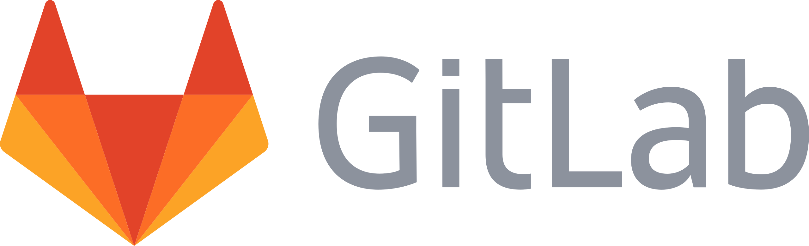

11. Librerías, archivo de requerimientos y Git.#
11.1. Librerías no nativas#
11.1.1. ¿Qué son las librerías?#
Las librerías en Python son conjuntos de módulos y funciones que permiten la extensión de las capacidades del lenguaje.
Facilitan la implementación de operaciones comunes en programación sin la necesidad de escribir código desde cero.
11.1.2. Instalación de librerías usando pip#
Las librerías no vienen instaladas por defecto, sino que tenemos que instalarlas usando el gestor de paquetes de Python llamado pip. Para instalar numpy podemos hacer lo siguiente:
pip install requests
Las librerías están en constante actualización de modo que nos gustaría que cuando construimos nuestro proyecto podamos instalar la versión de la librería en la que hicimos el desarrollo. Para instalar una versión específica de una librería usamos:
pip install requests==2.25.1
Para actualizar la librería usamos el comando:
pip install --upgrade requests
Para desinstalar una librería usamos:
pip uninstall requests
Para revertir a una versión previa primero desinstalamos la librería y después instalamos la versión requerida.
11.1.3. Instalación de librerías usando archivo de requerimientos#
Una lista de requerimientos es un archivo de texto que contiene una lista de ítems a ser instalados usando pip. Este archivo simplifica el manejo de dependencias en proyectos de Python. Para crear una lista de requerimientos, simplemente lista las librerías y sus versiones en el archivo requirements.txt:
requests==2.25.1
numpy>=1.19.5
Para realizar esta instalación se usa el siguiente comando:
pip install -r requirements.txt
11.1.3.1. ¿Cómo se importan las librerías?#
Las librerías se pueden importar utilizando la palabra clave import. Por ejemplo, para importar la librería math, se utiliza:
Código ya hecho para resolver realizar operaciones frecuentes y resolver problemas comunes.
Una de las más usadas es numpy que permite hacer operaciones vectoriales de manera más sencilla y eficiente.
Para acceder al código de
numpyhay que usar una de las siguientes formas:
# import numpy # importa todas las funciones
import numpy as np # La forma más usual con un alias
# from numpy import random as rd # importando sólo un módulo en especial con un alias, usado para librerías muy grandes
Por ejemplo, con el módulo random se pueden generar una variable aleatoria uniforme entre el 0 y el 1 con la siguiente instrucción:
# accedemos a código de estas librerías llamándolas por su alias. Los módulos están separados por puntos
np.random.random()
0.4307855776480116
{kind=link}
Las librerías pueden tener muchos módulos y los módulos a su vez pueden tener muchas funciones.
Las funciones de cada librería se pueden llamar con parámetros por defecto (default) o asignar valores a ciertos parámetros, como veremos con la función
np.random.random(size=1000)
Para esta función, el valor por defecto de size es 1, de modo que si no especificamos otra cosa, generará sólo un experimento.
11.2. Ambientes virtuales#
La creación y gestión de ambientes virtuales en Python es una práctica esencial para el desarrollo de software, ya que permite a los desarrolladores trabajar en proyectos con dependencias específicas sin afectar otros proyectos o el sistema Python global.
11.2.1. ¿Qué es un ambiente virtual?#
Un ambiente virtual es un entorno Python aislado que permite instalar paquetes y gestionar dependencias de manera independiente para cada proyecto. Esto significa que puedes tener diferentes versiones de una misma librería en diferentes ambientes virtuales sin que uno interfiera con el otro.
11.2.2. ¿Para qué sirve un ambiente virtual?#
Los ambientes virtuales son útiles para:
Aislar dependencias: Cada proyecto puede tener sus propias dependencias, sin importar las versiones instaladas globalmente.
Experimentación segura: Permite probar nuevas librerías o actualizar versiones de paquetes sin afectar otros desarrollos.
Consistencia entre entornos: Facilita la replicación de entornos de desarrollo, pruebas y producción, reduciendo los problemas de “funciona en mi máquina”.
11.2.3. Crear un ambiente virtual usando venv#
venv es el módulo de Python incorporado para crear ambientes virtuales. Para crear un nuevo ambiente virtual, utiliza el siguiente comando, reemplazando myenv con el nombre que desees para tu ambiente virtual.
11.2.4. Crear un ambiente virtual llamado ‘myenv’#
python -m venv myenv
11.2.5. Activar un ambiente virtual#
Una vez creado, debes activar el ambiente virtual para utilizarlo. El comando para activar un ambiente virtual varía según el sistema operativo.
En Windows:
myenv\Scripts\activate
En Linux o macOS:
source myenv/bin/activate
11.2.6. Desactivar un ambiente virtual#
Para salir del ambiente virtual y volver al entorno global de Python, utiliza el comando deactivate.
11.2.7. Desactivar el ambiente virtual#
deactivate
11.2.8. Instalar paquetes en un ambiente virtual#
Una vez activado el ambiente virtual, puedes instalar paquetes usando pip. Los paquetes se instalarán en el ambiente virtual sin afectar el entorno global de Python.
11.2.9. Instalar un paquete en el ambiente virtual#
pip install requests
11.2.10. Eliminar un ambiente virtual#
Para eliminar un ambiente virtual, simplemente elimina el directorio donde se creó el ambiente. No hay un comando específico de venv para eliminar un ambiente virtual.
11.2.11. En Windows#
rd /s /q myenv
11.2.12. En Linux o macOS#
rm -rf myenv
11.3. Git#
Git es un sistema de control de versiones distribuido que facilita la gestión de cambios en el código fuente durante el desarrollo de software. Permite a múltiples usuarios trabajar juntos en el mismo proyecto de manera eficiente.
11.3.1. Uso Básico de Git#
Para iniciar un nuevo repositorio en Git, se utiliza:
git init
Para clonar un repositorio existente:
git clone <url-del-repositorio>
Para agregar cambios al área de staging:
git add <archivo>
Para confirmar los cambios en el repositorio:
git commit -m "Mensaje descriptivo del cambio"
Para subir los cambios al repositorio remoto:
git push origin <nombre-de-la-rama>
11.4. GitLab#
GitLab es una plataforma de gestión de repositorios Git que proporciona una serie de herramientas para la colaboración en proyectos de software, incluyendo seguimiento de problemas, revisión de código, y CI/CD (integración continua y entrega continua).
{kind=link}
Nota
Git se usa para el desarrollo local de un usuario. Después, herramientas como Gitlab se usa para gestionar desarrollos locales y unirlos en un repositorio colaborativo donde se pueden subir cambios, regresar a versiones anteriores entre varios usuarios.